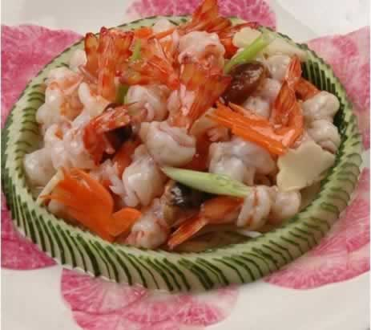
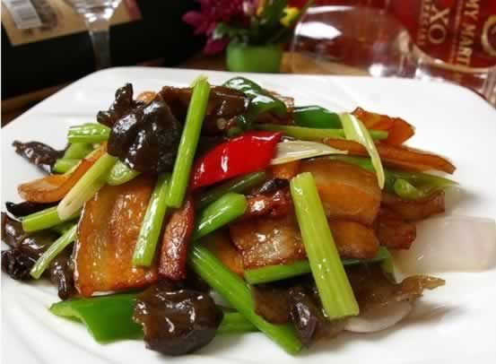
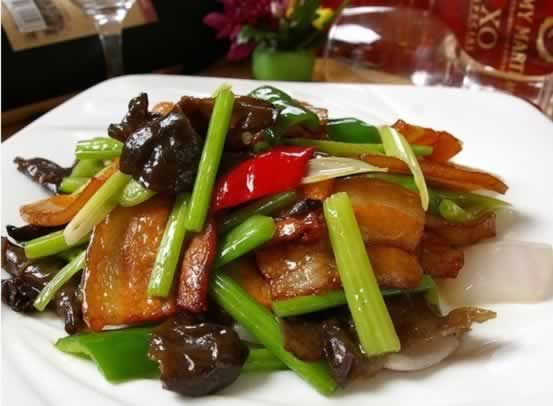

食补是补钙的最佳方式
怀孕5个月后，胎儿的牙齿开始钙化，骨骼也在建造，会从准妈妈体内摄取大量的钙。如果准妈妈此时缺钙，就会发生浮肿、疼痛、抽筋等不适，也会影响胎宝贝的牙齿和骨骼发育。为了避免缺钙现象发生，准妈妈在孕期需重视补钙。食补被认为是补钙的理想方式，孕中期建议准妈妈每日补钙1000mg。那么，含钙高的食物有哪些呢？
1、牛奶及奶制品：半斤牛奶含钙接近300mg，还含有多种氨基酸、乳酸、矿物质及维生素，促进钙消化和吸收，而且牛奶中的钙质更易被吸取。建议孕妈咪将牛奶作为日常补钙的主要食品之一，酸奶、奶酪、奶片等也是良好的钙来源。
1、牛奶及奶制品：半斤牛奶含钙接近300mg，还含有多种氨基酸、乳酸、矿物质及维生素，促进钙消化和吸收，而且牛奶中的钙质更易被吸取。建议孕妈咪将牛奶作为日常补钙的主要食品之一，酸奶、奶酪、奶片等也是良好的钙来源。
2、海带、虾皮：海带和虾皮是高钙海产品。海带与肉类同煮或是煮熟后凉拌，都是不错的美食，每天吃上25g，就可以补钙300mg。虾皮中含钙量更高，25g虾皮就含有500mg的钙。而用虾皮做汤或做馅都是日常补钙的不错选择。
3、豆制品：大豆是高蛋白食物，含钙量也很高。500g豆浆含钙120mg，150g豆腐干含钙500mg，但豆腐中的钙吸收率远低于奶制品，可以作为牛奶之外的补钙来源。
4、蔬菜：蔬菜中也有许多高钙的品种，比如小白菜、油菜、茴香、芫荽、芹菜等，但蔬菜中大多含有草酸、植酸，钙容易与草酸、植酸等结合，从而影响钙的吸收，所以蔬菜的钙元素吸收率相对较低。
5、坚果类：坚果中含丰富的、对人体有利的不饱和脂肪酸，钙的含量也很高，也可满足补钙需要。
本周推荐尝试食谱1：
龙身凤尾虾
推荐理由：虾含钙丰富，并具有补肾益气、健身壮力的作用，孕妇常食可满足钙的需求。
食谱原料：
海虾(300克)、火腿肠(30克) 、香菇（鲜）(10克) 、竹笋(40克) 、小白菜(300克) 、淀粉(10克) 、料酒(10克) 、大葱(10克) 、香油(3克) 、盐(2克) 、植物油(50克)；
制作方法：
1. 海虾剥去头及身壳（留尾）洗净用于厨房纸巾将水份吸干；
2. 用刀在每只虾背部剖一刀至尾（刀深为虾身的1/2，切不可剖断成2 片），剔去沙线，用刀面轻轻拍平待用；
3. 火腿切5 厘米长，火柴梗大小的条15 条；
4. 香菇、竹笋切小麦形；
5. 葱白切马蹄片；
6. 小白菜择洗干净，待用；
7. 将一条火腿条，横放于一只虾尾的肉面上，撒上少许干淀粉，然后从虾尾往前卷（虾尾要露出）成菜肴生坯（15只虾依法卷上火腿条）；
8. 炒锅置旺火上，热锅下冷油烧至五成热，将虾生坯下锅过油成形，倒进漏勺沥去油；
9. 热锅留余油在旺火上，入配料、调料，炒二下，倒入过油的虾，快速翻炒几下起锅装盘；
10. 小白菜炒熟装虾的周围，即可成菜。
本周推荐尝试食谱2：
回锅肉

回锅肉

推荐理由：此菜美味易做，含有磷、铁、钙、维生素b1、维生素b2、维生素c及蛋白质等。
食谱原料：
五花肉50克，青椒50克，葱、甜面酱、豆瓣酱、料酒、糖、生抽少许。
制作方法：
1、整块五花肉用料酒、少许生抽腌2小时。
2、上锅蒸20分钟。
3、蒸肉时调酱，甜面酱和豆瓣酱1：1调匀，并加少许料酒和糖。
4、蒸好的五花肉切片，坐锅用一点点油煸得稍微焦黄（差一点点火候的样子），然后盛出。
5、锅留底油，炒青椒和香葱，也要差一点点火候，这样等回锅的时候才能刚刚好，炒好后盛出。
6、炒味酱，等出香味后把肉和菜一齐放入翻炒两下，放鸡精、调味，出锅。